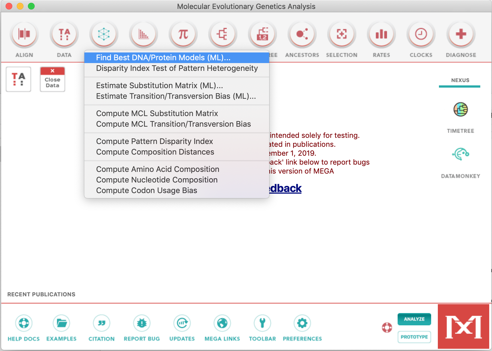
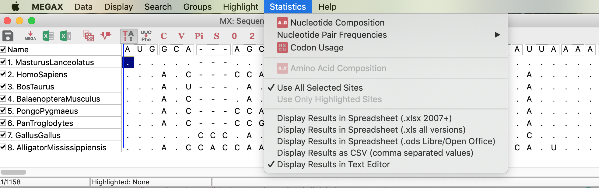
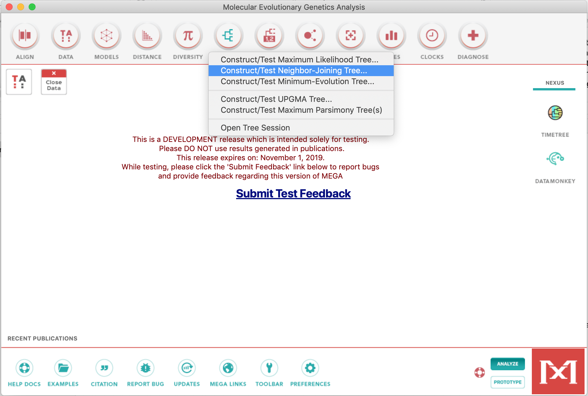

Inferring Phylogenies using MEGAX
A crash course.
Now we're going to use this dataset to construct the phylogenetic trees. For this we will use MEGAX.
-
Open the alignment. In the next window, click in
Analyzeas DAMBE (protein coding nucleotide sequences and the genetic code). -
Test of the nucleotide substitution model.

The test of nucleotide substitution model sometimes gives as result models which are not present in MEGA options. In these cases, you have to choose a model that has the necessary parameters suitable to represent your sequence alignment. Although highly recommended, especially for beginners in phylogenetic analyses, this test is not critical.
- Examine the alignment statistics. Click in the TA icon on the right, to launch the Data Explorer.

- Construct a Neighbor-joining Phylogenetic tree, with a bootstrap test. Use Complete deletion on this dataset. You can use Tamura-Nei 93, since GTR model does not exist for the Neighbor-Joining method. Don't forget to examine the gamma-shape parameter for the TN93 model and the proportion of invariant sites (if needed).


- Construct a phylogenetic tree using Parsimony and also Maximum Likelihood. For the later, you can use the GTR model (General Time-reversible), selected by the test of the nucleotide substitution model. Also use Complete deletion on both methods.

In the ML method, you don't need to adjust a specific gamma-shape parameter, you just have to set to use Gamma
- Do not forget to root the trees when necessary and to save the trees.
The tree demonstrated below is not rooted with the most plausible outgroup!

Exercise:
-
Which species do you choose to be the outgroup of the above dataset? Explain.
-
Compare the obtained trees and explain the phylogeny, always looking for supporting (or not) bootstrap values.